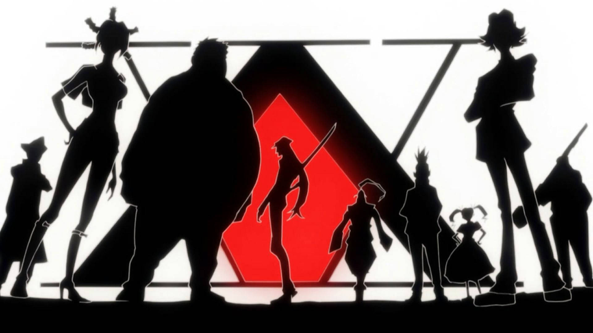
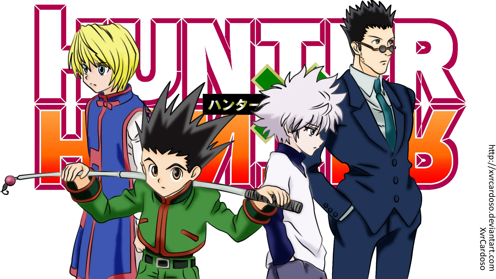

Enredo

Doze anos antes do início da história, Ging Freecss deixou seu filho Gon nas mãos de sua tia Mito na Ilha da Baleia.
Gon, que sempre acreditou que seus pais tinham morrido, descobre um dia graças ao aprendiz de seu pai, Kite, que ele ainda está vivo e se tornou um dos melhores Hunters, indivíduos de elite e licenciados para rastrear tesouros secretos, animais exóticos e até mesmo outros indivíduos.
Motivado por esta revelação, Gon decide sair de casa e entrar no Exame Hunter, que tem uma série de desafios que buscam testar suas habilidades, como de sobrevivência e trabalho em equipe de seus participantes.
Principais personagens

Durante o exame, Gon, conhece e faz amizade com outros três participantes: Kurapika, o último membro do clã Kurata, que quer se tornar um Hunter, a fim de vingar sua família e recuperar os olhos escarlate que foram roubados de seus corpos por um grupo de mercenários conhecidos como Gen'ei Ryodan; Leorio, que só quer ser um Hunter para poder pagar seus estudos de medicina; e Killua Zoldyck, um jovem que deixou sua antiga vida como um membro da família mais famosa de assassinos.
Assim, este pequeno grupo de amigos embarcam em uma série de aventuras com cada um tentando conquistar seus objetivos.